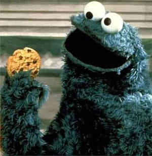

Anexo:Curiosidades de los universos paralelos
 De: La Frikipedia, la enciclopedia extremadamente seria.
De: La Frikipedia, la enciclopedia extremadamente seria.
Artículo principal: Universos paralelos
Se producen muchos fenómenos extraños según en el universo paralelo en el que nos encontremos.
Tipos de universos paralelos
Existen millones de universos paralelos para nombrarlos uno por uno, por eso aqui se mencionan algunas de sus posibilidades:
Informática
- En un universo paralelo todos usan Linux y Firefox, sino la computadora estalla en pedazos.
- En un universo paralelo Bill Gates es pobre.
- En un universo paralelo al escribir lol en cualquier medio de computacion desata un virus y la maquina explota.
- En un universo paralelo la Frikipedia es una página porno.
- En un universo paralelo no existe este artículo.
- En un universo paralelo este artículo no es tan largo.
- En ese otro universo frikipedia es la que te hace los deberes y no sabes que es wikipedia
- En un universo paralelo Norton es un virus y Troyano es un antivirus
Cine y TV
 Al menos aqui consigue dejar el vicio...
- En un universo paralelo los Simpsons ya se acabaron y Seinfield tiene mas de 30 temporadas.
- En un universo paralelo Mortadelo y Filemón fueron creados por Disney.
- En un universo paralelo Casino Royale gano un Oscar.
- En un universo paralelo Brad Pitt es el ser mas odiado por las mujeres.
- En un universo paralelo el enano le gana a Légolas en el señor de los anillos.
- En un universo paralelo Mickey Mouse ya se tiró a Minnie.
- En un universo paralelo los tiburones del asfalto extinguieron a los Power Rangers.
- En un universo paralelo el padrino es un cuento infantil.
- En un universo paralelo Jackie Chan no pelea chistoso.
- En un universo paralelo Star Wars fue un libro primero y el señor de los anillos salió en los 80.
- En un universo paralelo South Park es todo público y los Teletubies es para mayores de 21.
- En un universo paralelo Doctor House trabaja de conserje en el hospital de Caracas.
- En un universo paralelo Homer Simpson es negro.
- En un universo paralelo Bill Cosby es chino.
- En un universo paralelo todavía dan Miami Vice y Baywatch.
- En un universo paralelo el zorro tiene una bazooka.
- En un universo paralelo los heroes de peliculas recargan balas a su armas.
- En un universo paralelo Harry Potter tiene la cicatríz en una nalga.
- En un universo paralelo el chavo es pija y ñoño es emo.
- En un universo paralelo el bananero da clases de castellano en un preescolar.
- En un universo paralelo el anticristo de youtube no ha aprendido a decir hijos de puta.
- En un universo paralelo los piratas del Caribe viajan en el agua sobre un mar de barcos.
- En un universo paralelo Garu besa a
puta pucca y esta lo denuncia por pervertido.
- En un universo paralelo no cancelaron Futurama.
- En un universo paralelo Silvester Stalone es buen actor.
- En un universo paralelo Pamela Anderson es monja.
- En un universo paralelo Carmen Electra y Jessica Biel son novias.
- En un universo paralelo Bush es actor porno.
- En un universo paralelo Chuwaca tiene plumas.
- En un universo paralelo plaza Sésamo fue creado por la mafia italiana.
- En un universo paralelo el monstruo de las galletas deja el vicio y se pasa a las anfetas.
Sociedad
- En un universo todo el mundo es es socialista y respetan al comunismo, porque odian profundmente al capitalismo.
- En un universo paralelo Bruce Lee es el Dios de Frikipedia.
- En un universo paralelo Joseph Allen Hynek logró que la ONU y los científicos aceptaran a la Ufología como ciencia verdadera, y por eso se comprobó la existencia de los OVNIs
- En un universo paralelo Lao-Tse es el filósofo mas respetado, y nadie sabe quien diantres son Platón y Descartes.
- En un universo paralelo Corea del Norte es el país mas querido por el resto del mundo.
- En un universo paralelo USA no bombardea a los países que no aceptan sus políticas neoliberales.
- En un universo paralelo las mujeres asiáticas son casi todas tetonas y las rubias son muy inteligentes.
- En un universo paralelo los perros te sacan a ti a pasear.
- En un universo paralelo la gente no usa pantalones.
- En un universo paralelo los celulares se llevan en el zapato.
- En un universo paralelo el pato Donald ya conquistó el mundo.
- En un universo paralelo Chavez es un erudito respetado.
- En un universo paralelo Peter Griffin es un ejemplo a seguir.
- En un universo paralelo la Inversión Rusa te invierte a tí.
- En un universo paralelo se hacen orgías en las iglesias.
- En un universo paralelo la comida de la cafetería del colegio/universidad sabe bien.
- En un universo paralelo los testigos de jehovah nunca tocan a tu puerta.
- En un universo paralelo los católicos se levantan temprano a tocar puertas para despertar a los testigos de jehovah.
- en un universo paralelo Rob Halford no es gay.
- en un universo paralelo el hilo dental es de hombres.
- en un universo paralelo los frikis son atractivos.
- en un universo paralelo el niño loco por tibia no tiene internet y si tiene vida social.
- en un universo paralelo Gabo no es homosexual.
- en un universo paralelo los emos son mejores que los jebis.
- en un universo paralelo tú no existes, la razón es ... PATADA EN LOS COJONES!!
- en un universo paralelo los canis son listos.
- en un universo paralelo los bebes paren madres.
- en un universo paralelo Hitler ganó la guerra y tú eres ario.
- en un universo paralelo tenemos 4 dedos.
- en un universo paralelo tu eres mujer u hombre (todo depende de lo que seas ahora).
- en un universo paralelo no eres ninguno de los dos.
- en un universo paralelo los pantalones se ponen desde la cabeza y la camisa desde los pies.
- en un universo paralelo le temes a la vida y mueres todos los días.
- en un universo paralelo las mujeres quieren hacerte el amor y tú no te dejas porque eso es violación.
- en un universo paralelo la porno la pasan en los preescolares.
- en un universo paralelo no hay gordas en la pagina de sexy o no.
- en un universo paralelo a todos los feos los sacrifican al dios de la belleza.
- en un universo paralelo moriste al cruzar la calle.
- en un universo paralelo estás usando un sombrero de vaquero.
- en un universo paralelo el mejor juego que existe se llaman canicas.
- en un universo paralelo el comunismo es buena idea.
- en un universo paralelo los emos no existen.
- en un universo paralelo los rasta golpean emos en México.
- en un universo paralelo Gandhi se fastidio de la no violencia y los mató a todos.
- en un universo paralelo cagamos por la boca y comemos por el ano.
- en un universo paralelo tú fastidias a las moscas.
- en un universo paralelo no eres un perdedor.
- En un universo paralelo Justin nunca nació y el rock y metal es lo que domina.
Musica
- en un universo paralelo el regueton no existe.
- en un universo paralelo Thriller da asco.
- en un universo paralelo Michael Jackson sigue siendo negro.
- en un universo paralelo 50 cent canta cumbia y Lars Ulrich es reguetonero.
- en un universo paralelo Nirvana se separa y Kurt Cobain no se suicido, dejó las drogas y se volvió hippie hasta que salió el regueton y se pegó un tiro.
- en un universo paralelo Juanes es cartel de droga.
- en un universo paralelo Rammstein le teme al fuego.
- en un universo paralelo las de RBD son educadísimas y cubridísimas puritanas (ah y no se equivocan de país).
- en un universo paralelo megadeth se llama minilife.
- en un universo paralelo tablón es el líder de Metallica.
- en un universo paralelo Ashlee Simpson si canta en los conciertos.
- en un universo paralelo Eddie es la criatura más tierna del planeta.
- en un universo paralelo el chacarrón es un tipo de música.
- en un universo paralelo el Charleston todavía se baila en las discotecas.
- en un universo paralelo Bob Marley es peor que Chavez.
- en un universo paralelo bob marley actúa en soy leyenda y escucha un cd de Will Smith .
Deportes
- en un universo paralelo la mansión Playboy le pertenece a pelé.
- en un universo paralelo Zidane nunca envejece.
- en un universo paralelo Ronaldiño juega tenis de mesa.
- en un universo paralelo Materazzi le dio un cabezazo a Zidane.
- en un universo paralelo gano Francia en el ultimo mundial.
Religión
- en un universo paralelo el 99% de la población mundial es atea y solo el 1% cree en Dios.
- en un universo paralelo Jesús viene a diario a la tierra de visita.
- en un universo paralelo Buda y Jesús juegan una partida de ajedrez.
- en un universo paralelo los curas no violan niños
- en un universo paralelo no te piden dinero para estar en la religion
- en un universo paralelo las religiones no tratan de lavarte el cerebro
- en un universo paralelo la religión no es el opio del pueblo, y siempre defiende a los marxistas y ataca a los empresarios.
Anime
- en un universo paralelo Goku es el peor perdedor de la historia.
- en un universo paralelo Mr. Satan dice la verdad.
- en un universo paralelo Luffy es peor que Goku.
- en un universo paralelo Sasuke quiere ser Hokage.
- en un universo paralelo Naruto ya es Hokage.
- en un universo paralelo Rock Lee no sabe Taijutsu, pero sabe Genjutsu y Ninjutsu.
- en un universo paralelo los Bijuus poseen Jinchurikis.
- en un universo paralelo Naruto hace el chidori y Sasuke el rasengan.
- en un universo paralelo Kakashi lee Harry Potter y cosmopolitán.
- en un universo paralelo El Equipo Rocket atrapa a Pikachu.
- en un universo paralelo Pikachu evoluciona a Raichu y este mata a Ash con un impactrueno.
- en un universo paralelo Los pokemones entrenan a los humanos.
- en un universo paralelo Ash se declara a Misty.
- en un universo paralelo Pokémon es una súper exitosa serie hentai.
- en un universo paralelo Luffy y Goku son vegetarianos.
- en un universo paralelo Marco es un maleducado niño malcriado que odia estar con su madre.
- en un universo paralelo Candy es lider de las sailor moon.
- en un universo paralelo Kira mata a Near y domina el mundo.
- en un universo paralelo L le gana a Kira y termina el anime.
- en un universo paralelo Bleach tiene mas raiting que Naruto y One Piece
- en un universo paralelo sakura es util
- en un universo paralelo tsunade es plana
Medio ambiente
- en un universo paralelo el cielo es verde y la noche es blanca.
- en un universo paralelo caes hacia arriba y te tiran hacia abajo.
Gourmet
- en un universo paralelo el chocolate es la sustancia más peligrosa del mundo.
- en un universo paralelo el ron fluye por los ríos y el agua emborracha.
- en un universo paralelo Britney Spears no es puta y sigue con Justin.
Videojuegos
- en un universo paralelo XBOX y Playstation se extinguieron después del fracaso de sus respectivas primeras consolas.
- en un universo paralelo Tetris consiste en hacer lineas verticales y mueres si haces una horizontal.
- en un universo paralelo Scorpion congela y sub-zero quema.
- en un universo paralelo Raiden tira agua.
- en un universo paralelo Arthas no agarra la Frostmoore.
- en un universo paralelo Sonic es mas lento que conseguir algo avanzado en el ogame.
- en un universo paralelo Knuckles es el prota de la saga y Sonic solo es su lacayo.
- en un universo paralelo Kirby escupe y no chupa.
- en un universo paralelo CJ no es negro.
- en un universo paralelo 50 cent se llama CJ.
- en un universo paralelo tibia es una religion protestante.
Anatomía
- en un universo paralelo nadie se burla de las personas virgenes, y la mayoría tiene su primera vez después de los 21.
- en un universo paralelo somos pequeños y las hormigas nos queman con sus gigantescas lupas.
- en un universo paralelo llueve sangre y sangramos agua.
- en un universo paralelo orinamos por el dedo y las mujeres tienen una teta en la espalda.
- en un universo paralelo los frikis son atractivos.
Otros
- en un niverso paralelo no tengo herorrez hortofragicoz.
- en un universo paralelo yo no soy un ladillao que escribe una estupidez.
- en un universo paralelo no tenemos genitales.
- en un universo paralelo no existe el porno en internet.
- en un universo paralelo nos reproducimos por esporas.
- en un universo paralelo nos reproducimos por metástasis.
- en un universo paralelo no creen en los universos paralelos.
- en un universo paralelo las tipas buenas no usan ropa o sino se la quitan con solo mirarlas feo.
- en un universo paralelo la gente va desnuda por la calle
- en un universo paralelo todavía usan VHS y BETAMAX.
- en un universo paralelo me fastidie de tanto escribir este
puto artículo.
- en un universo paralelo Luke es padre de Darth Vader.
- en un universo paralelo Letterface es la niñera de tus hijos.
- en un universo paralelo existe un oso-hombre-cerdo.
- en un universo paralelo me llamo Max Power.
- en un universo paralelo me copiaron el artículo.
- en un universo paralelo ... me cago en tus pelotas.
- en un universo paralelo es el punto final de esta puta lista!
Variantes Universales según en que universo paralelo nos encontremos
Los últimos estudios frikipédicos han conseguido agrupar algunas de las cosas que cambian en según que Universo Paralelo estemos. Estas pueden ser:
- Todas las cosas tienen un color diferente.
- Al lanzar la moneda al aire el resultado es el contrario.
- Todos los seres racionales son hippies.
- Toda forma de vida es un robot.
- Todo el mundo tiene una laptop.
- Toda forma de vida inteligente (como los humanos juega el juego del Litri en busca del Odrogoban perdido
- Todos los seres tienen la cabeza como los muñequitos de el Fary que se pone en el salpicadero de los coches.
- Todo el mundo es un monstruo, algo así como Frankenstein, luchadores de wrestling o vendedores de círculo de lectores.
- Todos los seres humanos tienen cara de perro, excepto los nacidos el π2 de Febrero de un año acabado en 6'022x1023 (Número del Abogado)
- Los seres vivos están hechos de nailon trenzado.
- los animales tienen horchata en lugar de sangre.
- Lus humanos tienen chocolate en lugar de sangre y por lo tanto todos están gordos
- Y todas las tonterias que se
me te ocurran.
 Anexos Anexos
|
|
|
Autor(es):
- Alex el Mono
- Mad Max
- Mel-o
- Ricardoxxxlo
- Xagos
- Rikcyleo
- Gñapero Solitario
- Varew
- Butters2
- Genericool
Frikipedia 2005-2016, Licencia
GFDL 1.2 - Extraído por FrikiLeaks